Created: 08/04/2020
By: Marcos Lima
Email: support@marcoslima.com
Site: marcoslima.com
Thank you for purchasing my report system. If you have any questions that are beyond the scope of this help file, please feel free to email via my user page contact form here. Thanks so much!
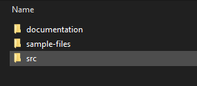
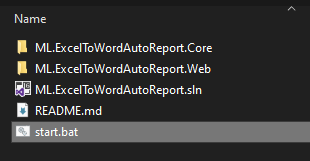
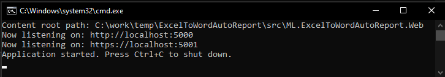
Open your web browser and access the URL http://localhost:5000. 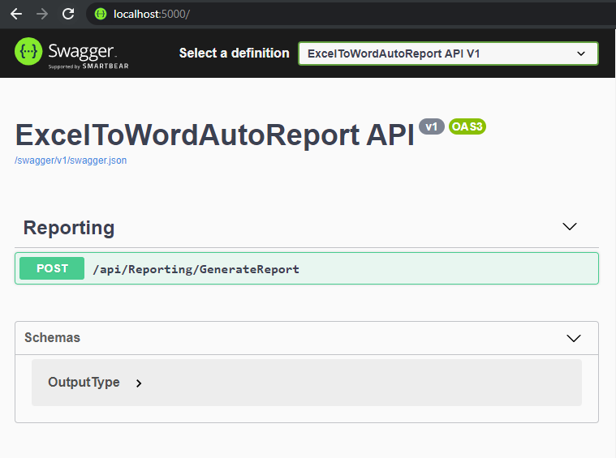
Expand the API /api/Reporting/GenerateReport and click on the Try it out button. 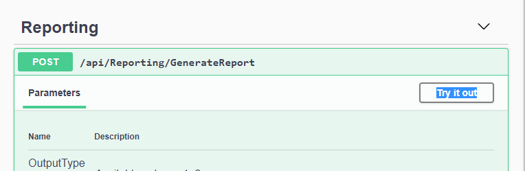
Select in the OutputType input which type of document the reports will be generated.
Default option -- -> PDF
Option 1 -> PDF
Option 2 -> Word
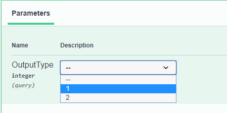
Select the files for the excelfile and wordTemplatefile inputs. 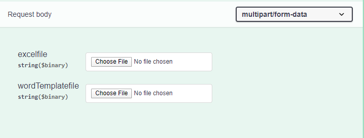
Open the sample files folder.
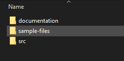
Select the files in their respective inputs.
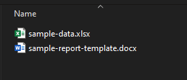
Click on Execute and wait for the execution to finish. 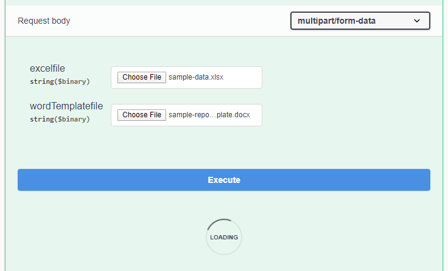
Click on the Download file link and download the reports (Zipped). 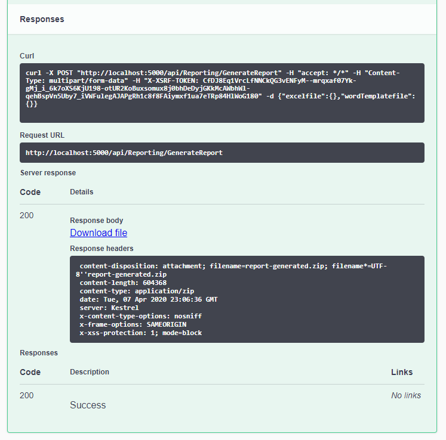 Generated reports.
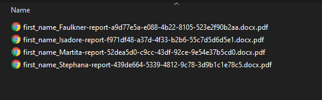
Year, MonthFullName, MonthShortName, MonthNumber, Month, DayNumber, DayShortName, DayFullName, DayThe User option is activated when a sheet named Users exists in the input Excel file. A report will be generated for each row of the sheet named Users. Therefore, in the syntax it is only necessary to inform the name of the column.
Sheet Users
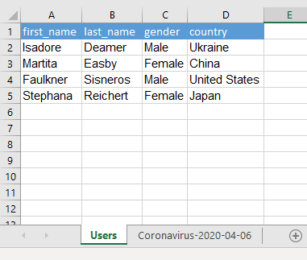
Example
Any type of word document See requirements) can be an input template file, just add the Date, Sheet or User markings. To know more about the syntax of each markup click here.
All markings used within a template use data from the excel file. So if you use a markup in this format {{Sheet: Coronavirus-2020-04-06|=TEXT(A1,"0")}}, the report that will be generated and will have the place where the markup was entered, will be inserted information from cell A1 of the Coronavirus-2020-04-06 sheet.
Note that in this example the markings are underlined in red.
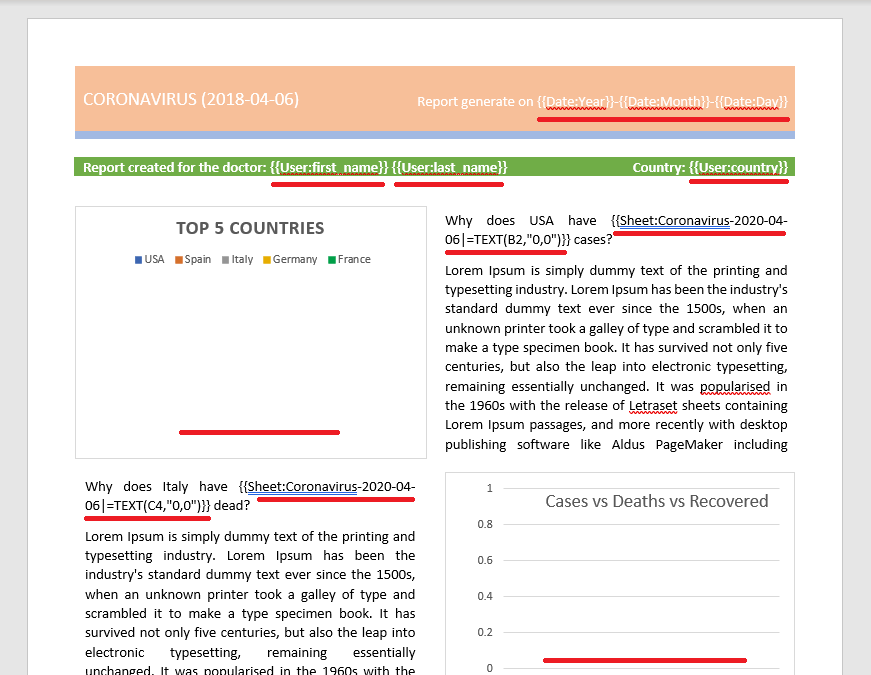
In the graphics you insert in the word there is a built-in excel. It is also possible to add the markings. Here is an example:
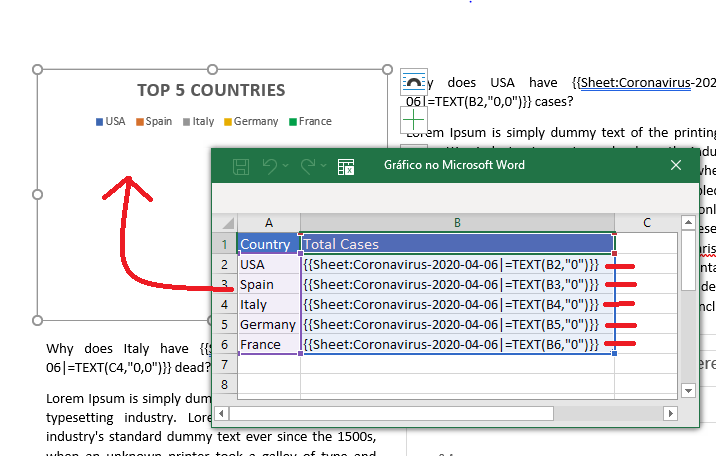
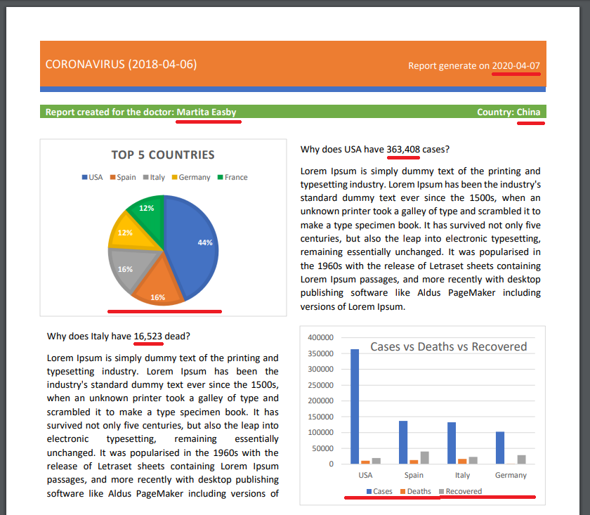
It is very important that the excel file that will be used to be the data input for the report, be it a file that does not do any other function, only has the necessary data for the report. This guarantees better performance when generating reports.
Create sample reports with the Generate Report step by step.